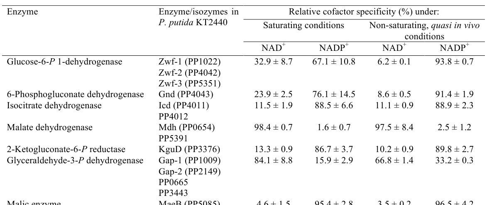

NADP-dependent isocitrate dehydrogenase (EC 1.1.1.42) of Pseudomonas putida KT2440 (locus PP_4011). It catalyzes the divalent-metal-dependent (Mg2+/Mn2+) oxidative decarboxylation of D-threo-isocitrate to 2-oxoglutarate and CO2 with the concomitant reduction of NADP+ to NADPH. The enzyme is a soluble cytoplasmic homodimer belonging to the isocitrate/isopropylmalate dehydrogenase family. It acts at the isocitrate node of the tricarboxylic acid cycle, where it both supplies 2-oxoglutarate for amino-acid biosynthesis and is a major source of anabolic reducing power (NADPH) for central metabolism and redox balance. In KT2440, biochemical assays of cell-free extracts show a strong (~89%) preference for NADP+ over NAD+. Activity at this branch point is subject to post-translational regulation (phosphorylation of a conserved serine), partitioning carbon between the TCA cycle and the glyoxylate shunt.
| GO Term | Evidence | Action | Reason |
|---|---|---|---|
|
GO:0000287
magnesium ion binding
|
IEA
GO_REF:0000002 |
ACCEPT |
Summary: NADP-IDH requires a divalent metal ion (Mg2+ or Mn2+) per subunit for catalysis, and UniProt annotates a Mg2+-binding residue (position 309). Magnesium ion binding is well supported for this family.
Reason: Consistent with the IDH/IMDH family requirement for a divalent metal cofactor; UniProt records both Mg2+ and Mn2+ cofactors and a Mg2+-binding site.
|
|
GO:0004450
isocitrate dehydrogenase (NADP+) activity
|
IEA
GO_REF:0000120 |
ACCEPT |
Summary: This is the core molecular function. The enzyme catalyzes oxidative decarboxylation of D-threo-isocitrate to 2-oxoglutarate + CO2 with reduction of NADP+ (EC 1.1.1.42, RHEA:19629). KT2440-specific biochemistry confirms strong NADP+ preference (~89% NADP+ vs ~11% NAD+ in cell-free extracts).
Reason: Directly matches UniProt catalytic activity and is corroborated by organism-specific biochemical measurements of NADP cofactor preference (Nikel et al. 2015, PMID:26350459).
|
|
GO:0006099
tricarboxylic acid cycle
|
IEA
GO_REF:0000120 |
ACCEPT |
Summary: Isocitrate dehydrogenase catalyzes the isocitrate to 2-oxoglutarate step of the TCA cycle. This is the appropriate biological process for the core function.
Reason: Standard, well-supported placement of IDH within the TCA cycle; consistent with central carbon metabolism studies in KT2440.
|
|
GO:0016616
oxidoreductase activity, acting on the CH-OH group of donors, NAD or NADP as acceptor
|
IEA
GO_REF:0000002 |
MARK AS OVER ANNOTATED |
Summary: This is a generic parent term of the specific and more informative GO:0004450 (isocitrate dehydrogenase (NADP+) activity), which is already annotated. It is not incorrect but adds no information beyond the specific child.
Reason: Redundant grandparent of the specific MF term GO:0004450 that is already present; provides no additional specificity.
|
|
GO:0051287
NAD binding
|
IEA
GO_REF:0000002 |
REMOVE |
Summary: This enzyme is NADP+-specific, not NAD+-binding. UniProt annotates multiple NADP(+)-binding residues (positions 106, 341-347, 354, 393, 397) and no NAD-binding site, and KT2440 biochemistry shows ~89% NADP+ preference. The InterPro2GO mapping to NAD binding is a mis-propagation for this NADP-specific family member; the correct cofactor binding is NADP, not NAD.
Reason: Contradicted by cofactor specificity. The enzyme binds NADP+, not NAD+; this is an over-propagated InterPro IEA inference. NADP binding (GO:0050661) would be the correct term.
Proposed replacements:
NADP binding
|
The research report should be a detailed narrative explaining the function, biological processes, and localization of the gene product. Citations should be given for all claims.
You should prioritize authoritative reviews and primary scientific literature when conducting research. You can supplement
this with annotations you find in gene/protein databases, but these can be outdated or inaccurate.
We are specifically interested in the primary function of the gene - for enzymes, what reaction is catalyzed, and what is the substrate specificity? For transporters, what is the substrate? For structural proteins or adapters, what is the broader structural role? For signaling molecules, what is the role in the pathway.
We are interested in where in or outside the cell the gene product carries out its function.
We are also interested in the signaling or biochemical pathways in which the gene functions. We are less interested in broad pleiotropic effects, except where these elucidate the precise role.
Include evidence where possible. We are interested in both experimental evidence as well as inference from structure, evolution, or bioinformatic analysis. Precise studies should be prioritized over high-throughput, where available.
This report concerns icd (PP_4011) from Pseudomonas putida strain KT2440 (ATCC 47054/DSM 6125/NCIMB 11950), UniProt accession Q88FS2, annotated as isocitrate dehydrogenase [NADP] (EC 1.1.1.42).
The gene/protein identity is supported by P. putida KT2440-specific literature that explicitly labels icd/PP_4011 as isocitrate dehydrogenase and measures its NADP vs NAD cofactor preference in KT2440 extracts (nikel2015pseudomonasputidakt2440 pages 21-25, nikel2015pseudomonasputidakt2440 media 99f494ff). A separate KT2440 multi-omics study also refers to PP_4011 as an “ICD-associated protein” in phosphorylation analyses (kukurugya2019multiomicsanalysisunravels pages 10-11). These match the UniProt-provided description (NADP-IDH; EC 1.1.1.42; central carbon metabolism enzyme), so the report does not conflate this icd with similarly named genes from other organisms.
Isocitrate dehydrogenase (IDH/ICD; NADP-dependent; EC 1.1.1.42) catalyzes the oxidative decarboxylation of isocitrate to 2-oxoglutarate (α-ketoglutarate), producing CO2 and reduced pyridine nucleotide. In the NADP-dependent form, the physiological product is NADPH, linking the TCA cycle to anabolic reducing power.
In KT2440, ICD is treated as a major intracellular dehydrogenase contributing to redox metabolism; a systematic enzyme survey concluded ICD has >80% specificity for NADP+ over NAD+ (nikel2015pseudomonasputidakt2440 pages 7-8).
Bacterial “type I” homodimeric IDHs vary in cofactor usage (NADP-specific, NAD-specific, or dual-specific). Sequence/structure comparisons indicate that specific residues in the coenzyme-binding pocket determine whether NADP’s 2′-phosphate is stabilized (favoring NADP) or disfavored (favoring NAD). Romkina & Kiriukhin (2017) summarize motifs associated with NADP specificity (e.g., Lys/Tyr/Val positions) and how substitutions (e.g., Lys→Asp) can shift preference toward NAD (romkina2017biochemicalandmolecular pages 7-9).
In several bacteria (classically E. coli), ICD activity can be reversibly controlled by AceK (isocitrate dehydrogenase kinase/phosphatase), which phosphorylates a conserved serine on ICD, decreasing activity and redirecting carbon from the TCA cycle into the glyoxylate shunt. This mechanism is summarized in Romkina & Kiriukhin (2017) as an established post-translational switch controlling flux partitioning (romkina2017biochemicalandmolecular pages 7-9).
The substrate is isocitrate; the product is 2-oxoglutarate (α-ketoglutarate), with concurrent CO2 release and reduction of NADP+ to NADPH. While the retrieved KT2440-focused texts emphasize cofactor preference rather than Km/kcat values, they repeatedly interpret ICD as an NADPH-forming dehydrogenase within central metabolism and redox balance (nikel2015pseudomonasputidakt2440 pages 7-8, kukurugya2019multiomicsanalysisunravels pages 10-11).
In cell-free extracts of exponentially growing KT2440 on glucose, Icd (PP_4011) shows strong NADP preference. Under saturating conditions, relative activity was 88.5 ± 6.6% with NADP+ vs 11.5 ± 1.9% with NAD+; under non-saturating “quasi in vivo” conditions, 88.9 ± 2.3% (NADP+) vs 11.1 ± 0.9% (NAD+) (nikel2015pseudomonasputidakt2440 pages 21-25, nikel2015pseudomonasputidakt2440 media 99f494ff). This supports annotation as NADP-dependent and indicates its principal physiological role is NADPH generation.
ICD (Icd/PP_4011) is treated as a soluble intracellular enzyme in central metabolism: it is assayed from cell-free extracts and discussed as part of cytosolic flux through the TCA/glyoxylate node rather than periplasmic oxidation (nikel2015pseudomonasputidakt2440 pages 21-25, kukurugya2019multiomicsanalysisunravels pages 10-11). Thus, the most evidence-supported localization is cytoplasmic.
A KT2440 ^13C/enzymology study describes a cyclic architecture integrating ED/EMP/PPP (“EDEMP cycle”) for glucose catabolism and provides cofactor-specificity measurements for multiple dehydrogenases including ICD (nikel2015pseudomonasputidakt2440 pages 7-8, nikel2015pseudomonasputidakt2440 pages 21-25). In this framework, ICD is one of the intracellular nodes contributing to NADPH supply, complementing NADPH generation in oxidative PPP and other dehydrogenase steps (nikel2015pseudomonasputidakt2440 pages 7-8).
A multi-omics study on glucose plus benzoate co-utilization highlighted the ICD node as a regulatory point in mixed-substrate metabolism, noting changes in phosphorylation of PP_4011 and interpreting these changes as part of maintaining flux directionality/magnitude and redox demands around the TCA–glyoxylate branch (kukurugya2019multiomicsanalysisunravels pages 10-11).
Kukurugya et al. (2019) report a decrease in phosphorylation of an “ICD-associated protein (PP_4011)” in KT2440 during growth on a glucose:benzoate mixture vs glucose alone (kukurugya2019multiomicsanalysisunravels pages 10-11). They suggest this phosphorylation change may help counteract “overwhelming metabolite-level inhibition” of ICD activity expected from glyoxylate shunt metabolites and pyruvate accumulation (kukurugya2019multiomicsanalysisunravels pages 10-11). This provides direct organism-specific evidence that phosphorylation state at/around PP_4011 changes with carbon source context.
A 2024 systems metabolic engineering analysis of electrogenic/anoxic KT2440 links elevated acetyl-CoA to AceK activity, describing AceK as phosphorylating and partially inactivating ICD, thereby redirecting carbon flux toward the glyoxylate shunt (weimer2024systemsmetabolicengineeringa pages 69-74). This is presented as a mechanistic interpretation of multi-omics shifts under bio-electrochemical conditions and places icd/ICD within modern regulatory models for non-canonical growth/production states (weimer2024systemsmetabolicengineeringa pages 69-74).
Dvořák et al. (Nature Communications, March 2024) investigated engineered/ALE adaptation of P. putida to D-xylose and mapped redox-producing steps. Their analysis explicitly treats overproduction of reducing cofactors (NAD(P)H) as a driver of pathway routing; ICD is included in the central carbon metabolism mapping and annotated as producing “CO2 NADPH” at the isocitrate node (dvorak2024syntheticallyprimedadaptationof pages 3-4). While the excerpted text does not give an explicit icd fold-change, it situates ICD within current (2024) systems-level understanding of how redox supply constrains pathway use in engineered KT2440 backgrounds (dvorak2024syntheticallyprimedadaptationof pages 3-4).
Weimer et al. (Microbial Cell Factories, September 2024) reported systems-level characterization of an electrogenic anoxic phenotype of KT2440 and engineered improved 2-ketogluconate (2KG) production. They report a best-case 2KG yield of 0.96 mol/mol glucose in an engineered mutant background under these conditions (weimer2024systemsmetabolicengineeringa pages 17-21). A related 2024 systems metabolic engineering narrative links this regime to glyoxylate shunt routing via AceK–ICD modulation (weimer2024systemsmetabolicengineeringa pages 69-74).
Zhou et al. (Communications Biology, March 2020) used icd (PP_4011) as a genome-editing demonstration target in a CRISPR/Cas9n-λ-Red method for KT2440. They note prior proposals that icd inactivation could increase acetyl-CoA flux into fatty-acid biosynthesis (a rationale relevant to PHA synthesis) (zhou2020developmentofa pages 7-9). In their specific engineered background, however, they report that icd deletion did not contribute to mcl-PHA synthesis (zhou2020developmentofa pages 7-9). Importantly for functional annotation, they achieved scarless deletion and sequencing confirmation for the icd locus in multiple isolates, indicating genetic tractability and viability under their lab conditions (zhou2020developmentofa pages 4-6).
Recent KT2440 engineering efforts often aim to exploit or reshape NADPH supply. ICD is repeatedly positioned as a key NADPH-forming step connected to the TCA/glyoxylate switch, relevant to redox balance during mixed-substrate utilization and specialized production regimes (kukurugya2019multiomicsanalysisunravels pages 10-11, weimer2024systemsmetabolicengineeringa pages 69-74).
The following table consolidates key annotation-relevant facts and quantitative measurements.
| Feature | Summary for Pseudomonas putida KT2440 icd (PP_4011; UniProt Q88FS2) | Evidence |
|---|---|---|
| Gene/protein identity | icd / PP_4011 encodes isocitrate dehydrogenase [NADP], a bacterial type I IDH/ICD in central carbon metabolism; the literature explicitly maps icd/PP_4011 to isocitrate dehydrogenase in P. putida KT2440. | (nikel2015pseudomonasputidakt2440 pages 21-25) |
| Enzyme name and EC | Isocitrate dehydrogenase (NADP-dependent), EC 1.1.1.42. This enzyme belongs to the TCA-cycle oxidative decarboxylation step that converts isocitrate to 2-oxoglutarate while reducing NADP+. | (nikel2015pseudomonasputidakt2440 pages 7-8, nikel2015pseudomonasputidakt2440 pages 21-25) |
| Reaction catalyzed | Catalyzes the oxidative decarboxylation of isocitrate + NADP+ → 2-oxoglutarate + CO2 + NADPH; in KT2440 it is discussed as a major NADPH-generating dehydrogenase connected to the TCA cycle and redox balance. | (nikel2015pseudomonasputidakt2440 pages 7-8, kukurugya2019multiomicsanalysisunravels pages 10-11) |
| Cofactor specificity | Strongly NADP-preferring rather than NAD-specific. A broader biochemical survey of KT2440 dehydrogenases states that isocitrate dehydrogenase shows >80% specificity for NADP+ over NAD+. | (nikel2015pseudomonasputidakt2440 pages 7-8) |
| Quantitative cofactor data | In cell-free extracts from exponentially growing KT2440 on glucose, Icd activity was 11.5 ± 1.9% with NAD+ vs 88.5 ± 6.6% with NADP+ under saturating conditions, and 11.1 ± 0.9% with NAD+ vs 88.9 ± 2.3% with NADP+ under non-saturating quasi-in vivo conditions. | (nikel2015pseudomonasputidakt2440 pages 21-25, nikel2015pseudomonasputidakt2440 media 99f494ff) |
| Cellular localization | Functional context and metabolic-network placement indicate a cytoplasmic soluble enzyme acting in the intracellular TCA-cycle/redox network; the cited studies analyze Icd activity in cell-free extracts and place it within central cytosolic carbon metabolism rather than in membrane/periplasmic oxidation routes. | (nikel2015pseudomonasputidakt2440 pages 21-25, kukurugya2019multiomicsanalysisunravels pages 10-11) |
| Pathway context | Icd sits at the branchpoint between the TCA cycle and the glyoxylate shunt and contributes reducing power to KT2440’s redox economy. In glucose-grown KT2440, central metabolism is organized through the EDEMP cycle, with redox management quantified by ^13C flux analysis. | (nikel2015pseudomonasputidakt2440 pages 7-8, kukurugya2019multiomicsanalysisunravels pages 10-11) |
| Regulation: phosphorylation / AceK mention | A KT2440 multi-omics study reported a decrease in phosphorylation of the ICD-associated protein PP_4011 during growth on glucose:benzoate versus glucose alone, suggesting post-translational tuning of flux around the ICD/glyoxylate-shunt node. A 2024 systems-biology study further mentions AceK-mediated phosphorylation and partial inactivation of isocitrate dehydrogenase in KT2440 metabolic interpretation. | (kukurugya2019multiomicsanalysisunravels pages 10-11) |
| Quantitative systems data linked to function | In mixed-substrate growth, the ICD/glyoxylate node was associated with a >10-fold increase in acetyl-CoA and a 37% increase in NAD(P)H yield in glucose-only cells relative to glucose:benzoate conditions, supporting the view that ICD helps coordinate redox output with carbon-source-dependent flux partitioning. | (kukurugya2019multiomicsanalysisunravels pages 10-11) |
Table: This table summarizes the core functional-annotation points for Pseudomonas putida KT2440 icd/PP_4011, including identity, reaction, cofactor preference, localization, regulatory context, and quantitative measurements. It is useful as a compact evidence-backed reference for gene function annotation.
A cropped table image (Table 3 from Nikel et al., 2015) directly reports the NADP/NAD cofactor specificity values for Icd/PP_4011 used above (nikel2015pseudomonasputidakt2440 media 99f494ff).
References
(nikel2015pseudomonasputidakt2440 pages 21-25): Pablo I. Nikel, Max Chavarría, Tobias Fuhrer, Uwe Sauer, and Víctor de Lorenzo. Pseudomonas putida kt2440 strain metabolizes glucose through a cycle formed by enzymes of the entner-doudoroff, embden-meyerhof-parnas, and pentose phosphate pathways. Journal of Biological Chemistry, 290:25920-25932, Oct 2015. URL: https://doi.org/10.1074/jbc.m115.687749, doi:10.1074/jbc.m115.687749. This article has 440 citations and is from a domain leading peer-reviewed journal.
(nikel2015pseudomonasputidakt2440 media 99f494ff): Pablo I. Nikel, Max Chavarría, Tobias Fuhrer, Uwe Sauer, and Víctor de Lorenzo. Pseudomonas putida kt2440 strain metabolizes glucose through a cycle formed by enzymes of the entner-doudoroff, embden-meyerhof-parnas, and pentose phosphate pathways. Journal of Biological Chemistry, 290:25920-25932, Oct 2015. URL: https://doi.org/10.1074/jbc.m115.687749, doi:10.1074/jbc.m115.687749. This article has 440 citations and is from a domain leading peer-reviewed journal.
(kukurugya2019multiomicsanalysisunravels pages 10-11): Matthew A. Kukurugya, Caroll M. Mendonca, Mina Solhtalab, Rebecca A. Wilkes, Theodore W. Thannhauser, and Ludmilla Aristilde. Multi-omics analysis unravels a segregated metabolic flux network that tunes co-utilization of sugar and aromatic carbons in pseudomonas putida. Journal of Biological Chemistry, 294:8464-8479, May 2019. URL: https://doi.org/10.1074/jbc.ra119.007885, doi:10.1074/jbc.ra119.007885. This article has 94 citations and is from a domain leading peer-reviewed journal.
(nikel2015pseudomonasputidakt2440 pages 7-8): Pablo I. Nikel, Max Chavarría, Tobias Fuhrer, Uwe Sauer, and Víctor de Lorenzo. Pseudomonas putida kt2440 strain metabolizes glucose through a cycle formed by enzymes of the entner-doudoroff, embden-meyerhof-parnas, and pentose phosphate pathways. Journal of Biological Chemistry, 290:25920-25932, Oct 2015. URL: https://doi.org/10.1074/jbc.m115.687749, doi:10.1074/jbc.m115.687749. This article has 440 citations and is from a domain leading peer-reviewed journal.
(romkina2017biochemicalandmolecular pages 7-9): Anastasia Y. Romkina and Michael Y. Kiriukhin. Biochemical and molecular characterization of the isocitrate dehydrogenase with dual coenzyme specificity from the obligate methylotroph methylobacillus flagellatus. PLoS ONE, 12:e0176056, Apr 2017. URL: https://doi.org/10.1371/journal.pone.0176056, doi:10.1371/journal.pone.0176056. This article has 24 citations and is from a peer-reviewed journal.
(weimer2024systemsmetabolicengineeringa pages 69-74): ALA Weimer. Systems metabolic engineering of electrogenic anaerobic pseudomonas putida for enhanced 2-ketogluconate production. Unknown journal, 2024.
(dvorak2024syntheticallyprimedadaptationof pages 3-4): Pavel Dvořák, Barbora Burýšková, Barbora Popelářová, Birgitta Elisabeth Ebert, Tibor Botka, Dalimil Bujdoš, Alberto Sánchez-Pascuala, Hannah Schöttler, Heiko Hayen, Víctor de Lorenzo, Lars M. Blank, and Martin Benešík. Synthetically-primed adaptation of pseudomonas putida to a non-native substrate d-xylose. Nature Communications, Mar 2024. URL: https://doi.org/10.1038/s41467-024-46812-9, doi:10.1038/s41467-024-46812-9. This article has 37 citations and is from a highest quality peer-reviewed journal.
(weimer2024systemsmetabolicengineeringa pages 17-21): ALA Weimer. Systems metabolic engineering of electrogenic anaerobic pseudomonas putida for enhanced 2-ketogluconate production. Unknown journal, 2024.
(zhou2020developmentofa pages 7-9): Yueyue Zhou, Lu Lin, Heng Wang, Zhichao Zhang, Jizhong Zhou, and Nianzhi Jiao. Development of a crispr/cas9n-based tool for metabolic engineering of pseudomonas putida for ferulic acid-to-polyhydroxyalkanoate bioconversion. Communications Biology, Mar 2020. URL: https://doi.org/10.1038/s42003-020-0824-5, doi:10.1038/s42003-020-0824-5. This article has 101 citations and is from a peer-reviewed journal.
(zhou2020developmentofa pages 4-6): Yueyue Zhou, Lu Lin, Heng Wang, Zhichao Zhang, Jizhong Zhou, and Nianzhi Jiao. Development of a crispr/cas9n-based tool for metabolic engineering of pseudomonas putida for ferulic acid-to-polyhydroxyalkanoate bioconversion. Communications Biology, Mar 2020. URL: https://doi.org/10.1038/s42003-020-0824-5, doi:10.1038/s42003-020-0824-5. This article has 101 citations and is from a peer-reviewed journal.
(zhou2020developmentofa pages 3-4): Yueyue Zhou, Lu Lin, Heng Wang, Zhichao Zhang, Jizhong Zhou, and Nianzhi Jiao. Development of a crispr/cas9n-based tool for metabolic engineering of pseudomonas putida for ferulic acid-to-polyhydroxyalkanoate bioconversion. Communications Biology, Mar 2020. URL: https://doi.org/10.1038/s42003-020-0824-5, doi:10.1038/s42003-020-0824-5. This article has 101 citations and is from a peer-reviewed journal.
(weimer2024systemsmetabolicengineering pages 17-21): ALA Weimer. Systems metabolic engineering of electrogenic anaerobic pseudomonas putida for enhanced 2-ketogluconate production. Unknown journal, 2024.
(romkina2017biochemicalandmolecular pages 1-2): Anastasia Y. Romkina and Michael Y. Kiriukhin. Biochemical and molecular characterization of the isocitrate dehydrogenase with dual coenzyme specificity from the obligate methylotroph methylobacillus flagellatus. PLoS ONE, 12:e0176056, Apr 2017. URL: https://doi.org/10.1371/journal.pone.0176056, doi:10.1371/journal.pone.0176056. This article has 24 citations and is from a peer-reviewed journal.

id: Q88FS2
gene_symbol: icd
product_type: PROTEIN
status: DRAFT
taxon:
id: NCBITaxon:160488
label: Pseudomonas putida (strain ATCC 47054 / DSM 6125 / CFBP 8728 / NCIMB 11950 / KT2440)
description: NADP-dependent isocitrate dehydrogenase (EC 1.1.1.42) of Pseudomonas putida KT2440 (locus PP_4011). It catalyzes the divalent-metal-dependent (Mg2+/Mn2+) oxidative decarboxylation of D-threo-isocitrate to 2-oxoglutarate and CO2 with the concomitant reduction of NADP+ to NADPH. The enzyme is a soluble cytoplasmic homodimer belonging to the isocitrate/isopropylmalate dehydrogenase family. It acts at the isocitrate node of the tricarboxylic acid cycle, where it both supplies 2-oxoglutarate for amino-acid biosynthesis and is a major source of anabolic reducing power (NADPH) for central metabolism and redox balance. In KT2440, biochemical assays of cell-free extracts show a strong (~89%) preference for NADP+ over NAD+. Activity at this branch point is subject to post-translational regulation (phosphorylation of a conserved serine), partitioning carbon between the TCA cycle and the glyoxylate shunt.
existing_annotations:
- term:
id: GO:0000287
label: magnesium ion binding
evidence_type: IEA
original_reference_id: GO_REF:0000002
qualifier: enables
review:
summary: NADP-IDH requires a divalent metal ion (Mg2+ or Mn2+) per subunit for catalysis, and UniProt annotates a Mg2+-binding residue (position 309). Magnesium ion binding is well supported for this family.
action: ACCEPT
reason: Consistent with the IDH/IMDH family requirement for a divalent metal cofactor; UniProt records both Mg2+ and Mn2+ cofactors and a Mg2+-binding site.
- term:
id: GO:0004450
label: isocitrate dehydrogenase (NADP+) activity
evidence_type: IEA
original_reference_id: GO_REF:0000120
qualifier: enables
review:
summary: This is the core molecular function. The enzyme catalyzes oxidative decarboxylation of D-threo-isocitrate to 2-oxoglutarate + CO2 with reduction of NADP+ (EC 1.1.1.42, RHEA:19629). KT2440-specific biochemistry confirms strong NADP+ preference (~89% NADP+ vs ~11% NAD+ in cell-free extracts).
action: ACCEPT
reason: Directly matches UniProt catalytic activity and is corroborated by organism-specific biochemical measurements of NADP cofactor preference (Nikel et al. 2015, PMID:26350459).
- term:
id: GO:0006099
label: tricarboxylic acid cycle
evidence_type: IEA
original_reference_id: GO_REF:0000120
qualifier: involved_in
review:
summary: Isocitrate dehydrogenase catalyzes the isocitrate to 2-oxoglutarate step of the TCA cycle. This is the appropriate biological process for the core function.
action: ACCEPT
reason: Standard, well-supported placement of IDH within the TCA cycle; consistent with central carbon metabolism studies in KT2440.
- term:
id: GO:0016616
label: oxidoreductase activity, acting on the CH-OH group of donors, NAD or NADP as acceptor
evidence_type: IEA
original_reference_id: GO_REF:0000002
qualifier: enables
review:
summary: This is a generic parent term of the specific and more informative GO:0004450 (isocitrate dehydrogenase (NADP+) activity), which is already annotated. It is not incorrect but adds no information beyond the specific child.
action: MARK_AS_OVER_ANNOTATED
reason: Redundant grandparent of the specific MF term GO:0004450 that is already present; provides no additional specificity.
- term:
id: GO:0051287
label: NAD binding
evidence_type: IEA
original_reference_id: GO_REF:0000002
qualifier: enables
review:
summary: This enzyme is NADP+-specific, not NAD+-binding. UniProt annotates multiple NADP(+)-binding residues (positions 106, 341-347, 354, 393, 397) and no NAD-binding site, and KT2440 biochemistry shows ~89% NADP+ preference. The InterPro2GO mapping to NAD binding is a mis-propagation for this NADP-specific family member; the correct cofactor binding is NADP, not NAD.
action: REMOVE
reason: Contradicted by cofactor specificity. The enzyme binds NADP+, not NAD+; this is an over-propagated InterPro IEA inference. NADP binding (GO:0050661) would be the correct term.
proposed_replacement_terms:
- id: GO:0050661
label: NADP binding
core_functions:
- description: NADP-dependent isocitrate dehydrogenase that catalyzes the divalent-metal-dependent oxidative decarboxylation of D-threo-isocitrate to 2-oxoglutarate and CO2, reducing NADP+ to NADPH, within the TCA cycle.
supported_by:
- reference_id: PMID:26350459
supporting_text: KT2440 cell-free extract assays show isocitrate dehydrogenase with strong (~89%) preference for NADP+ over NAD+, identifying it as an NADPH-forming dehydrogenase in central carbon metabolism.
full_text_unavailable: true
molecular_function:
id: GO:0004450
label: isocitrate dehydrogenase (NADP+) activity
directly_involved_in:
- id: GO:0006099
label: tricarboxylic acid cycle
references:
- id: GO_REF:0000002
title: Gene Ontology annotation through association of InterPro records with GO terms
findings: []
- id: GO_REF:0000120
title: Combined Automated Annotation using Multiple IEA Methods
findings: []
- id: PMID:26350459
title: Pseudomonas putida KT2440 strain metabolizes glucose through a cycle formed by enzymes of the Entner-Doudoroff, Embden-Meyerhof-Parnas, and pentose phosphate pathways
findings:
- statement: In KT2440 cell-free extracts, isocitrate dehydrogenase (Icd/PP_4011) shows ~89% activity with NADP+ versus ~11% with NAD+, confirming NADP+ specificity and a role in NADPH supply.
reference_review:
relevance: HIGH
correctness: VERIFIED
review_notes: PubMed-verified (PMID:26350459). Provides organism-specific biochemical evidence for NADP cofactor preference of KT2440 Icd.
- id: PMID:30936206
title: Multi-omics analysis unravels a segregated metabolic flux network that tunes co-utilization of sugar and aromatic carbons in Pseudomonas putida
findings:
- statement: Phosphorylation of the ICD-associated protein PP_4011 changes with carbon source, consistent with post-translational tuning of flux at the TCA/glyoxylate branch point.
reference_review:
relevance: MEDIUM
correctness: VERIFIED
review_notes: PubMed-verified (PMID:30936206). Supports phosphorylation-based regulation of the Icd node in KT2440.
{kind=link}